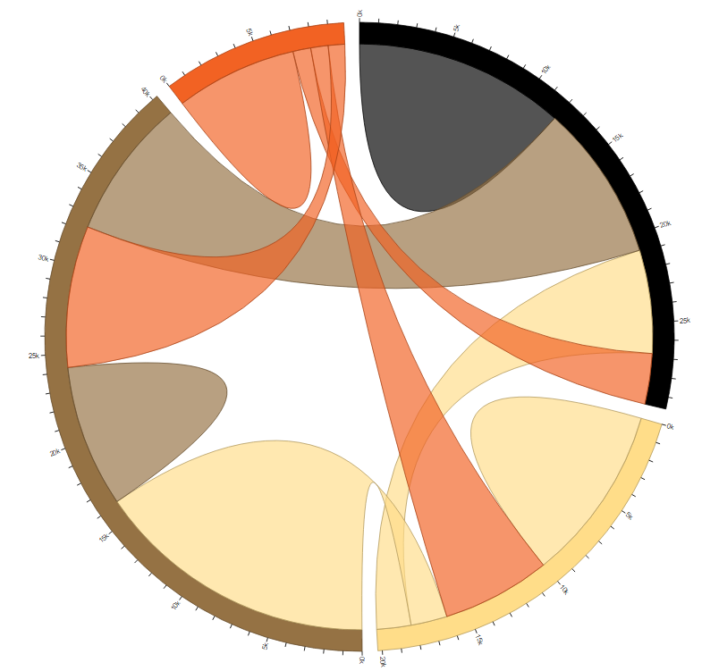

Please note this is still very much a work in progress. I am submitting this copy to show directionally the areas I plan to cover
Unlocking the Potential of D3.js with Qlik Sense APIs
Kevin McGovern
How using one of the web's most popular JavaScript libraries can help you build things that aren't a bar chart.
Who am I
Kevin McGovern

- Data Visualization Consultant at Slalom
- Qlik Branch Contributor
- Builds things with D3
Questions we will cover
- What is D3?
- How is D3 used?
- Where would you use D3 in Qlik Sense Mashups?
- What do you need to do differently for Extensions?
What is D3?
What D3 isn't
What D3 is
D3.js is a JavaScript library for manipulating documents based on data. D3 helps you bring data to life using HTML, SVG, and CSS. D3’s emphasis on web standards gives you the full capabilities of modern browsers without tying yourself to a proprietary framework, combining powerful visualization components and a data-driven approach to DOM manipulation.

Backing Up
"A JavaScript Library"
What is JavaScript?

"A JavaScript Library"
What is JavaScript?
- HTML sets document structure
- CSS sets styling
- JS informs your browser how to display content dynamically
"A JavaScript Library"
What is a js library?
Extending what native js can do, makes developers lives easier
- jQuery
- Angular
- React
- Ember
- Three.js
- Node.js
- D3.js
"manipulating documents based on data"
Browser renders HTML, CSS, JS to create Document Object Model
...or DOM
The DOM
More than just a fast and furious character
API that lets you interact with rendered web pages
Where does D3 come in?
- Bind data to elements in the DOM
- Change existing elements based on bound data
- Add new elements when more data added
- Remove elements when data changes
- Basically...
HTML Magic

D3 in Action
Finding elements, binding data, creating new elements
Using Scott Murray's Awesome TutorialAn Example
var dataset = [ 5, 10, 15, 20, 25 ];
d3.select("body")
.selectAll("p")
.data(dataset)
.enter()
.append("p")
.text("New paragraph!");
An Example
var dataset = [ 5, 10, 15, 20, 25 ];
d3.select("body")
.selectAll("p")
.data(dataset)
.enter()
.append("p")
.text("New paragraph!");
An Example
var dataset = [ 5, 10, 15, 20, 25 ];
d3.select("body")
.selectAll("p")
.data(dataset)
.enter()
.append("p")
.text("New paragraph!");
An Example
var dataset = [ 5, 10, 15, 20, 25 ];
d3.select("body")
.selectAll("p")
.data(dataset)
.enter()
.append("p")
.text("New paragraph!");
An Example
var dataset = [ 5, 10, 15, 20, 25 ];
d3.select("body")
.selectAll("p")
.data(dataset)
.enter()
.append("p")
.text("New paragraph!");
An Example
var dataset = [ 5, 10, 15, 20, 25 ];
d3.select("body")
.selectAll("p")
.data(dataset)
.enter()
.append("p")
.text("New paragraph!");
An Example
var dataset = [ 5, 10, 15, 20, 25 ];
d3.select("body")
.selectAll("p")
.data(dataset)
.enter()
.append("p")
.text("New paragraph!");
An Example - Results
console.log(d3.selectAll("p"))An Example - Exploring the Elements


Modified Example - Using Data to Add to Elements
var dataset = [ 5, 10, 15, 20, 25 ];
d3.select("body")
.selectAll("p")
.data(dataset)
.enter()
.append("p")
.text(function(d) { return d; });
Modified Example - Results
Modified Example - Changing the Data
var dataset = [ 5, 200, 15, 20, 25, 50 ];
d3.select("body")
.selectAll("p")
.data(dataset)
.enter()
.append("p")
.text(function(d) { return d; });
Modified Example - Results

Why are we talking about this at Qonnections?
Other than to show off appropriate gif/memes
Dynamic data manipulation is really useful for data visualization
Why D3 over a charting library?
Needs Content
D3 is more than a way to just change data on the page dynamically
- Visualize hierarchical data
- Visualize relationship-base data
- Leverage open source geo libraries
- Make super slick transitions
- Create interactive charts
- Integrate with the newest JS standards and libraries
Benefits of Using D3 with Qlik Sense
Needs Content
Needs Content
Talk about building mashups and using things build into page - also about extending OOB QS charts
Needs Content
QS gives a lot of meta data along with data
D3 in the wild
Needs Content
The most basic
sourceMaps
 source
source
Chords
 sourceBubble
sourceStream
sourceNetwork
sourceGreat D3 examples but how would I use that?
Needs Content
Using D3 in Mashups
Needs Content
When
Using D3 in Extensions
Needs Content
On to the real-world Qlik Sense Example
From bl.ocks to mashup
- Create new mashup
- Grab code from blocks
- Add into js
- Load csv as text
- Check the format of data loading
- Getting your data ready
- Capabilities API
- Connect to healthcare example
- The power of the community!
- data coming in, feed it into the chart
- Endless amount of cleanup
How does this differ with extensions
- An endless amount of configuration changes